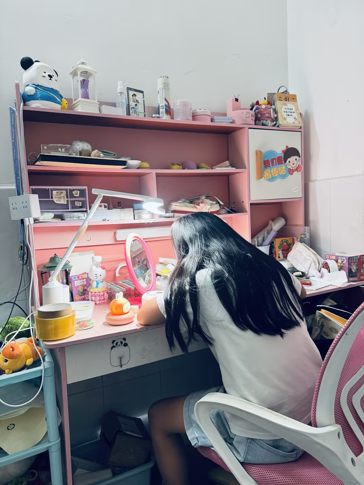
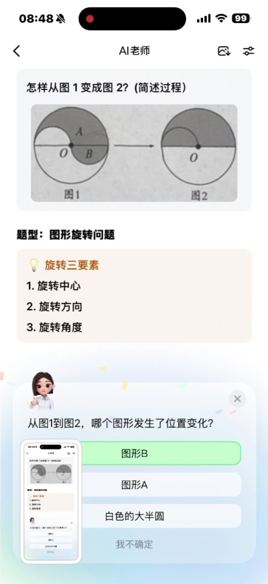
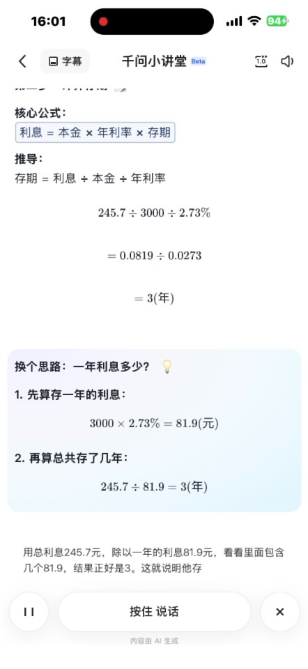
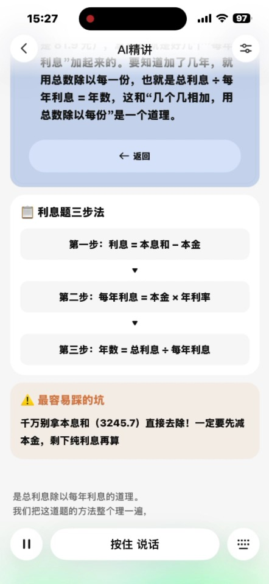

作业的价值是巩固知识并培养自主学习，工具不能替孩子完成关键动作。
BUSINESS ANALYSIS
作业业务
五看分析
从用户真实问题出发，判断长期该做什么、当前只做什么，以及什么结果才能证明方向成立。
研究基础：5个家庭访谈与作业观察、教研研究、竞品体验与业务数据
业务分析
五看只回答一个问题：什么值得长期做
步步高
政策划定边界，用户问题决定方向，行业与技术判断解法，自身基础只回答“为什么由我们验证”。有入口、有技术，不等于用户价值已经成立。
被动补差型孩子在开始、卡题和检查时反复停住，依赖妈妈或直接搜答案。
卡点识别与分层提示可做原型，但提示是否准确、是否刚好够用仍需验证。
行业擅长完整讲题和快速判错，较少把思考与作答真正还给孩子。
已有高频搜题入口，但完整视频承接低；这证明需要改进，不证明新解法必然成立。
覆盖作业前、中、后，但不是首期同时建设所有环节。
提供刚好够用的帮助，把判断和作答留给孩子。
从最小提示开始，验证孩子能否继续写、愿不愿再次使用。
本次要做的决策：是否先投入验证“最小提示 → 孩子继续作答”这一核心机制，而不是同时铺开整个作业全流程。
01 看政策
作业的目标不只是做完，更要让孩子在过程中学会学习
步步高
教研研究给出的方向很明确：作业既要巩固知识，也要培养自主学习能力，并通过过程表现发现孩子真正的问题。
作业的核心目标
巩固课堂知识与技能，让孩子在练习中理解、掌握并运用所学内容。
作业业务的价值
在孩子需要时提供及时、有针对性的帮助，并保留过程信息，支持发现问题和改进方法。
必须留给孩子的动作
理解题意、提取条件、选择方法、写出步骤、检查和改正，不能全部由工具代替。
政策与教研边界
控制作业总量与时长，减少机械重复；原则上以纸质作业为主，工具不能增加新的学习负担。
控制作业总量与时长，减少机械重复；原则上以纸质作业为主，工具不能增加新的学习负担。
对产品的判断标准
不看工具讲了多少，而看孩子是否在帮助后继续思考、完成关键动作，并逐渐减少依赖。
不看工具讲了多少，而看孩子是否在帮助后继续思考、完成关键动作，并逐渐减少依赖。
看政策结论：真正要长期坚持的不是“把作业更快做完”，而是让孩子在帮助后仍完成理解、思考、作答、检查和改正。
02 看用户
目标用户：被动补差型孩子
步步高
目标用户
有一定基础，但作业关键节点仍依赖外部帮助的孩子
目标是跟上校内，并非完全不会；真正的问题是缺少独立推进作业的能力，开始要催、卡题要问、写完要等人检查。
家庭环境
务实型家长重视校内结果，是作业过程中的主要提醒者和救场者。
“作业就是赶紧写完”
先挑容易的题，抗拒长题和大量书写；做到最后一题就默认结束，很少主动检查。
“还没玩够。” “不想写。”
不知道卡在哪里，也不知道下一步
反复读题仍没有思路时，会停笔、等妈妈，或者搜题直接看完整答案。
“妈妈我不会。”
给一点提示，让我自己继续
孩子想知道当前第一步做什么，而不是由家长或AI把整道题直接做完。
“给提示。” “第一步要做什么？”
还没准备好开始→写着容易停下来→卡题后等待救场→写完不主动检查
核心结论
这类孩子缺少的不是更多答案，而是在作业关键节点获得不替自己完成的帮助，从而能够继续行动。
研究依据
来自5个家庭访谈与作业观察；引号为用户原话，其余为重复现象归纳。
02 看用户
被动补差型孩子的典型作业旅程
步步高
基于5个家庭访谈与作业观察，将重复出现的行为、原话和痛点合成为典型旅程。卡题会在作业中反复发生，是体验最低谷，也是家长介入和孩子转向搜题的关键节点。
5/5 样本覆盖关键低谷：遇到卡题↻ 卡题可能反复发生
维度 / 阶段
作业前 ①确认作业
作业前 ②坐下开始
作业中 ③持续完成
作业中 ④ · 反复发生遇到卡题 ↻
作业后 ⑤写完检查
作业后 ⑥错题订正
孩子行为
翻登记本、班群和作业本，凭记忆确认任务；偶尔漏项或把作业忘在学校。
先玩、吃东西、找文具；妈妈叫几次后才慢慢坐到书桌前。
先挑会做的题；写着写着走神，看到长题、难题会停笔或跳过。
反复读题仍不动笔，空着等妈妈；或者打开搜题，看见答案后照着写。
写到最后一题就默认完成，等妈妈逐项核对并告诉自己哪里错了。
按妈妈指出的错题重做；不会时再听讲解，或直接把答案改对。
孩子原话
“糟了，忘记语文作业了。”
“还没玩够。”
“不想写。”
“不想写。”
“生字太多了，要写很久。”
“妈妈，这是什么意思？”
“妈妈我不会。”
“妈妈我不会。”
“写完了，那不用检查了。”
“为什么我抄了还会错呢？”
情绪变化
😟 慌张 / 心虚
😒 抗拒
😣 分心 / 烦
😫 困惑 → 烦躁 → 放弃
😌 放松 / 急着结束
😞 意外 / 懊恼
痛点
我没记清今天要写什么，有时还把作业忘在学校。
我还想玩，很难坐下来；妈妈提醒、计时也不一定有用。
我写着写着会分心；一看到长题、难题就不想继续了。
我读了几遍还是不知道第一步做什么；妈妈讲我不一定听懂，搜题又直接看到答案。
我觉得写完就是完成，不知道该检查哪里、怎么检查。
我只知道把答案改对，却不知道为什么错、下次怎么做。
现有应对
翻群消息、问同学或等妈妈确认。
妈妈催促、计时、陪到书桌前。
妈妈盯过程、提醒回到作业。
问妈妈、空着等人；或搜题、看完整讲解。
妈妈逐题核对，或用拍照批改找错。
重听讲解、重做或抄写正确答案。
为什么没解决
信息分散，仍靠孩子记忆和家长补漏。
妈妈不在时难启动，催促还容易引发冲突。
提醒只能暂时拉回，孩子仍不会自己维持节奏。
要么讲不懂，要么直接给完整答案；孩子没有完成关键思考。
错误由家长或工具发现，孩子没有学会检查方法。
答案改对了，但错因和方法没有真正掌握。
用户需求
我希望一眼看清今天要写什么、要带什么，从而不漏作业、不反复找东西。
我希望先从一件容易做的事开始，从而没那么抗拒写作业。
我希望停下来时能知道下一步做什么，从而不用一直等妈妈提醒。
我希望先给我提示，从而让我自己把题目做出来。
我希望知道先检查哪几题、怎么检查，从而自己发现并改正问题。
我希望弄明白为什么错、下次怎么做，从而不只把这次答案改对。
样本覆盖
3/5
偶发 / 周期性
偶发 / 周期性
5/5
每天 / 经常
每天 / 经常
4/5
经常
经常
5/5
每遇难题
每遇难题
5/5
经常
经常
3/5
订正时出现
订正时出现
关键判断：“我不想开始、卡住后不知道下一步、写完不知道怎么检查”均覆盖5/5样本；其中卡题会在一次作业中反复发生，并直接触发家长救场或搜题，是连接用户痛点、行业缺口与现有技术能力的关键节点。
引号为访谈中的孩子原话；行为、痛点、现有应对和需求由5个样本的重复现象归纳。样本覆盖用于本轮机会排序，不代表总体人群发生率。
02 看用户
孩子在作业前、中、后的核心痛点
步步高
所有痛点均从孩子的真实体验出发，再用5个样本中的覆盖人数判断优先级。红色整行为覆盖5/5样本的核心痛点。
| 阶段 | 孩子的痛点 | 用户原话 / 现场表现 | 数量 | 频繁程度 | 优先级 |
|---|---|---|---|---|---|
| 作业前 | 我还没准备好开始写 | “还没玩够。”“不想写。”有孩子从7:30玩到9:15，等妈妈回家才动笔。 | 5/5 | 每天 / 经常 | 核心 |
| 作业前 | 我会漏记任务，也不知道先写什么 | 漏记作业、忘带书本，不会安排先后顺序，甚至未完成却以为“做完了”。 | 3/5 | 偶发 / 周期性 | 一般 |
| 作业中 | 我卡住时，不知道下一步怎么做 | “妈妈，这是什么意思？”“妈妈我不会。”不会时停笔、空着或等妈妈。 | 5/5 | 每遇难题 | 核心 |
| 作业中 | 我一停下来，就很难自己接着写 | 写两题就玩、发呆或找别的事；遇到难题更容易停住。妈妈一走开，作业节奏就容易中断。 | 5/5 | 贯穿作业 | 核心 |
| 作业后 | 我写完后，不知道怎么检查 | “写完了，那不用检查了。”漏题、抄错和计算错误常等妈妈指出。 | 5/5 | 经常 | 核心 |
| 作业后 | 我改对了答案，却不知道为什么错 | “为什么我抄了还会错呢？”部分孩子重新抄写或听完讲解，仍说不清错在哪里。 | 3/5 | 订正时出现 | 一般 |
覆盖5/5样本的四个核心问题：我还没准备好开始、我卡住后不知道下一步、我停下后很难自己继续、我写完后不知道怎么检查。
痛点名称采用孩子视角；引号来自访谈记录。数量用于本轮机会排序，不代表总体人群发生率。
03 看技术
现有技术能否支撑作业前、中、后全流程
步步高
结论不看“有没有这个功能”，而看它能否在真实作业中稳定解决问题。现有技术对四个核心痛点均有基础，但满足程度不同。
| 核心痛点 | 现有技术基础 | 支撑判断 | 还缺什么 |
|---|---|---|---|
| 我还没准备好开始写 | 支持拍照、截图、语音录入作业，能解读任务、安排顺序、估算时间。 | 部分支撑 能把任务变清楚 | 能减少“我不知道先写什么”，但不能直接解决“不想开始”；启动提醒的实际效果还需验证。 |
| 我卡住时，不知道下一步怎么做 | 已建立五类卡点识别，并提供条件提示、思路点拨、知识铺垫和步骤拆解。 | 可支撑原型 基础最完整 | 卡点特征提取成熟度高，但多分类模型为中；还要验证判断是否准确、提示是否刚好够用。 |
| 我停下来后，很难自己接着写 | 可以追踪停留题目、时长、笔迹及分心、离座等行为，并触发提醒或家长通知。 | 部分支撑 能发现部分异常 | 作答过程追踪和主动督学指标仍需确认；提醒过多还可能变成另一种“催”。 |
| 我写完后，不知道怎么检查 | 题目识别、答案比对和规则解题可快速判错；小学三科批改率89.74%、批对率92.42%。 | 部分支撑 能替孩子发现错误 | 当前强项是系统判错，还不能证明孩子学会自己检查；步骤级批改成熟度低。 |
技术结论：现有技术足以启动卡题原型，但不足以证明用户问题已经解决。首期只验证一件事：系统能否判断孩子当前卡点，并用最少帮助让他继续写；启动、持续完成和自主检查暂不并行铺开。
建议先落地聚焦数学卡题：识别孩子卡在哪一类，只给当前一步提示，再观察孩子能否继续完成。
验证成功的标准不展示完整答案时，孩子能在提示后自己写出下一步；同时让孩子愿意继续使用，并减少对家长帮助的依赖。
资料来源：《作业业务线技术能力全景》；成熟度、准确率及“需进一步验证”状态沿用原素材口径。
04 看行业
核心痛点的行业解决方案
步步高
直接竞品、搜题批改工具和通用AI已经覆盖大量功能，但对“孩子能否完成关键动作”的支持仍不充分。
| 核心痛点 | 行业主要方案 | 当前满足程度 | 仍未解决的问题 |
|---|---|---|---|
| 我还没准备好开始，也不知道先做什么 | 作业清单、计划、番茄钟、倒计时、家长远程提醒 | 部分满足 任务和时间可以被看见 | 仍依赖孩子主动打开并执行，较少同时完成任务确认、顺序安排和第一步拆解。 |
| 我卡住后，不知道下一步怎么做 | 搜题、视频解析、AI讲题、动态板书、多轮问答、变式练习 | 功能最丰富 能够完整讲解一道题 | 多数由AI主讲整道题，孩子被动听完。较少先判断卡点、只提示当前一步，再让孩子继续做。 |
| 我写完后，不知道怎么检查 | 拍照批改、错因分析、错题本、知识点练习 | 判错能力较强 能快速定位错误 | 擅长告诉孩子哪里错了，较少教孩子如何自己发现、订正并说明原因。 |
| 我改对了，但不知道是否真的会了 | 错题归档、举一反三、知识点复习、学情报告 | 部分满足 能够提供后续练习 | 单题讲解与通用方法之间仍有断层，是否真正会做通常缺少独立作答验证。 |
行业空白：现有产品大多证明“工具能讲、能判”，尚未充分证明“孩子在帮助后能自己继续做”。长期可以贯穿作业前、中、后，当前最清晰的突破口仍是卡题时把作答权还给孩子。
04 看行业
三个AI工具的讲题方式
步步高
豆包爱学
分步跟随型

录屏证据：先识别题型与关键要素，再穿插选择题确认跟随。
识别题型 → 提炼要素 → 提问确认 → 分步讲解 → 给出结论
值得学习
每次只推进一个知识点，并用选项让孩子参与，跟随门槛低。
当前不足
关键判断仍由AI设定，孩子多在预设答案中选择，独立思考有限。
千问
概念关系型

录屏证据：用核心公式、图示关系和换个思路解释同一道题。
解释概念 → 画出关系 → 分步计算 → 换一种思路 → 回顾
值得学习
能把抽象数量关系画出来，并从不同角度解释，帮助孩子真正看懂题意。
当前不足
内容较长，AI连续主讲；讲完缺少让孩子独立完成关键步骤的验证。
元宝
方法迁移型

录屏证据：题后沉淀“三步法”并提示最容易踩的坑。
提取关键量 → 生活类比 → 三步求解 → 总结方法 → 易错提醒
值得学习
把一道题总结为通用步骤和易错点，最接近“讲一道，会一类”。
当前不足
方法总结清楚，但推理过程仍由AI完成，孩子是否会用尚未被证明。
共性：都能把当前题讲完整，图示、语音和结构化步骤越来越成熟。
差异：豆包爱学强在分步互动，千问强在概念关系解释，元宝强在题后方法沉淀。
共同缺口：较少先判断孩子具体卡点，再用最小提示让孩子完成关键一步；“听懂”与“会做”之间仍缺验证。
差异：豆包爱学强在分步互动，千问强在概念关系解释，元宝强在题后方法沉淀。
共同缺口：较少先判断孩子具体卡点，再用最小提示让孩子完成关键一步；“听懂”与“会做”之间仍缺验证。
05 看自己
已有高频搜题入口，但原题视频承接效率低
步步高
AI作业工具已经成为高频入口，搜题和批改也形成使用习惯；但从搜题到原题视频完播仅剩3.44%，说明用户有需求，现有完整视频却没有有效承接。
59.7%小学端周活渗透率
AI作业工具排名第一
57.0%初中端周活渗透率
AI作业工具排名第一
80,305S9整机周活用户
本次应用级数据基础
搜题之后，原题视频链路快速流失
6月S9搜题使用1,644,777次；以下比例均以搜题使用次数为分母
⌕100%发起搜题1,644,777次
→▣40%能搜到原题视频657,911次
→▶11.54%点击原题视频189,738次
→✓3.44%视频完播56,599次，约3%
业务含义：60%的搜题没有原题视频；即使有视频，最终完整看完的仅占全部搜题约3%。现有视频讲题没有有效承接大多数卡题需求。
确定的事实
作业是高频入口，搜题与批改已经形成使用习惯；我们能在孩子卡题时触达他。
必须正视的问题
原题视频覆盖40%，点击11.54%，最终完播仅占全部搜题3.44%；完整讲解没有有效承接多数需求。
待验证的潜在优势
结合题目识别、作答过程和学情数据，可能比单次搜题更懂孩子卡在哪里，并看到提示后是否真的继续完成。
看自己的结论：高频入口是验证机会，不是竞争壁垒；现有技术是起点，不是结果。只有证明“提示后孩子能自己继续”，这些入口与数据才真正形成优势。
数据来源：S9机型，2026.5.18—5.24；整机周活80,305人。应用周活与功能周活口径不同，不进行加总。
五看结论
核心业务机会：孩子停住后，仍能靠自己继续做
步步高
一句话核心判断
面向被动补差型孩子，在作业容易停住的时刻提供刚好够用的帮助，把判断和作答留给孩子；长期覆盖作业前、中、后，首期只验证数学卡题的最小提示机制。
作业要培养孩子自己完成关键学习动作。
方向不能以替做和更快出答案为核心。卡题覆盖5/5样本，并在一次作业中反复发生。
直接触发家长救场或孩子搜答案。卡点识别和分层提示已有原型基础。
能否判断准确、帮助适量仍待验证。行业普遍能完整讲题，却仍由AI主讲。
孩子有没有完成关键思考缺少验证。我们有高频搜题入口和过程数据基础。
入口能启动实验，结果必须由用户行为证明。自主作业全流程
作业前清楚任务并开始；作业中停住后能继续；作业后自己检查、订正并改会。
停住时给刚好够用的帮助
先判断为什么停住，从最小提示开始，每次把下一步行动交还给孩子。
小学4—6年级数学卡题
验证提示后能否独立写出下一步、少看完整答案，并愿意再次主动使用。
长期业务地图
作业前、中、后都让孩子自己往下走
这是扩展边界，不是首期同时开工的功能清单。
让我知道写什么，并愿意开始
孩子问题：任务不清、还没准备好开始，反复依赖妈妈提醒。
扩展前提：先证明工具的帮助不会变成新的催促。
我卡住时，给一点提示让我继续
孩子问题：读了几遍仍不知道第一步，等妈妈或直接搜答案。
核心机制：判断卡点 → 最小提示 → 孩子作答 → 再决定是否增加帮助。
让我自己发现问题并真正改会
孩子问题：写完即结束，不会检查；改对答案却不明白错因。
扩展前提：首期机制能促进独立作答，再延伸到自主检查与订正。
必须长期坚持
孩子主动求助或同意介入；从最小提示开始；关键步骤必须由孩子完成；帮助随能力提升逐渐减少。
不为清单
不默认完整讲题，不替孩子作答，不以持续监控和强制提醒制造使用，不用时长和点击代替真实学习价值。
管理层本次批准什么
批准“数学卡题最小提示”验证；不等于批准同时建设任务规划、督学、检查和错题全套功能。
方向成立的证据
提示后独立写出下一步↑；不查看完整答案完成率↑；主动复用↑；家长即时介入↓。
何时向全流程扩展
只有核心机制在真实作业中成立，才优先延伸到检查订正，再评估作业前的任务确认与启动。
停止或调整条件：若孩子仍普遍跳过提示直接看答案、提示后不能继续作答，或不愿再次主动使用，则不能因已有技术和入口继续扩大投入。
决策建议：长期坚持“自主作业全流程”的业务方向；当前聚焦验证“最小提示帮助孩子继续作答”这一件事。先证明孩子价值，再扩展业务范围。